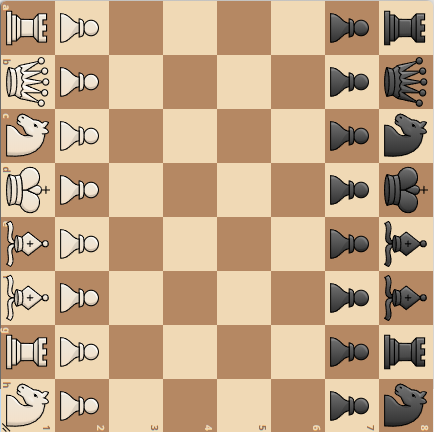
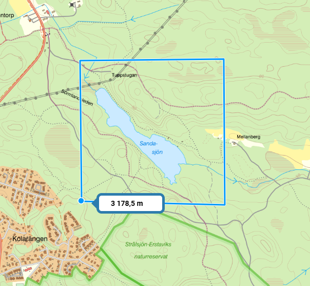

Detaljer
Detta är ett försök att kombinera schack med terränglöpning och få schack att bli en bättre lagsport, som bygger på samarbete.
Man kan se det som en stafett där alla deltagare springer samtidigt och varje lag har mellan noll och åtta stafettpinnar.
Man skapar ett virtuellt schackbräde, t ex i skogen och där det gärna får finnas naturliga hinder i form av vattendrag, berg och sjöar.
Varje schackruta är 100 x 100 meter. Hela brädet blir då 800 x 800 meter.
Spelarna startar appen och beger sig till brädets mittpunkt.
Då alla anlänt, startas partierna.
De fyra vitspelarna utför sina drag och man beger sig direkt till start- och slutrutorna. Därefter skickas dragen till det svarta laget.
Varje drag ger upphov till två uppdrag, startruta och slutruta.
Startruta och slutruta kommer att ligga i samma kvadranter för det första draget.
Spelarna kommer att tilldelas dessa uppdrag direkt om dessa är de närmaste, annars kommer de att bli aktiva mål längre fram.
När både startruta och slutruta besökts, skickas draget till motståndaren och det plingar till i hans mobil.
Detta upprepas tills partiet spelats klart.
Uppdrag
Fyra partier pågår samtidigt, precis som i en vanlig lagmatch.
Dock utförs inte dragen förrän start och slutruta besökts boots on the ground.
Varje drag delas upp i två uppdrag: startruta och slutruta.
Därefter fördelas de till en eller två kvadranter.
Spelare C kan t ex bestämma sig för ett drag, t ex löparen c1-g5, som sedan utförs av spelare A och D, kanske samtidigt.
Om spelarna redan befinner sig på dessa rutor, genomförs draget omedelbart.
Då båda uppdragen utförts, skickas draget till motståndaren.
Spelarna lämnar inte sina kvadranter, utan står kvar och väntar på nya uppdrag.
Eventuellt kan de röra sig mot mitten av sin kvadrant, ungefär som en tennisspelare, för att snabbt kunna nå alla bollar (rutor).
Då kommer de att ha ett maximalt avstånd på 1.5 * 141 = 212 meter i stället för 3 * 141 = 424.
Detta gäller om rutorna är 100 x 100 meter.
| • | a | b | c | d | e | f | g | h |
|---|---|---|---|---|---|---|---|---|
| 8 | C | C | C | C | D | D | D | D |
| 7 | C | C | C | C | D | D | D | D |
| 6 | C | C | C | C | D | D | D | D |
| 5 | C | C | C | C | D | D | D | D |
| 4 | A | A | A | A | B | B | B | B |
| 3 | A | A | A | A | B | B | B | B |
| 2 | A | A | A | A | B | B | B | B |
| 1 | A | A | A | A | B | B | B | B |
I början av partiet, kan det tyckas som om vissa spelare inte får några uppdrag.
Dock pågår fyra partier samtidigt, och dessa är roterade.
Detta innebär att uppdragen kommer att spridas ut på olika deltagare.
Eftersom det handlar om schack, vet man inte var striderna kommer att äga rum.
Vissa deltagare kommer att få fler uppdrag än andra, det är ofrånkomligt.
Simulator
Vid start samlas alla åtta deltagarna vid brädets mittpunkt.
Eftersom alla står i samma punkt, syns bara en spelare.
Därefter sätter man igång ett eller flera partier genom att klicka på A, B, C, och/eller D.
Tips: Börja med A. När du förstått hur det fungerar, titta på B. B är roterat. Först därefter A och B samtidigt.
Det blir ganska rörigt, pga att flera roterade partier pågår samtidigt.
I appen ser man bara ett oroterat parti. Uppdragen som dyker upp utför man utan att fundera närmare på dem.
Man har ingen information om vilket parti de tillhör och man vet inte var motståndarnas pjäser står.
Observera att draget e2-e4 kan ibland utföras e4 först, därefter e2, beroende på var deltagaren befinner sig.
De fyra partierna är vända åt fyra olika väderstreck.
Detta för att jämna ut geografiska orättvisor.
- A: Vit längst ner
- B: Vit till höger
- C: Vit högst upp
- D: Vit till vänster
Partierna är hämtade från Lichess.
Därför är betänketiden noll sekunder.
Tiderna man ser går åt till spelarnas förflyttning.
Varje spelare ansvarar enbart för sin kvadrant av brädet, t ex har A abcd1234.
Deltagarna antas börja på ett uppdrag så fort det dyker upp.
Det kan slumpa sig så att en spelare får åtta uppdrag med en gång.
I så fall börjar han med det närmaste, tar därefter nästa som nu är närmast, osv.
Ibland står de redan på start- eller stopprutan och då markeras uppdraget som klart.
Annars börjar de förflytta sig mot den ruta som är närmast, av alla uppdrag.
Dyker det upp ett nytt uppdrag, som är närmare än det pågående, byter man automatiskt till det.
Detta är en primitiv algoritm för att approximativt hitta en bra lösning.
Den perfekta lösningen går ej att finna, man känner ju inte till alla framtida drag.
Det egna lagets deltagare är markerade med A-D, motståndarna E-H.
Den ruta man ska gå till är markerad med ett streck mellan den egna bokstaven och rutan.
Pågående/köade drag är markerade med röda punkter.
Start och slutruta är hopkopplade med ett streck.
I simulatorn kan man även se motståndarlagets drag.
I appen kommer man inte att se någon deltagares position.
Deltagarens uppgifter
- Sköta sitt eget parti. Undvika tidsnöd.
- Utföra uppdrag så fort som möjligt.
Parallella partier
Precis som i en lagmatch möter varje lagmedlem en spelare i andra laget.
Samarbetet inom laget går ut på att man hjälps åt att utföra varandras drag.
De drag som behöver utföras fördelas på spelarnas kvadranter.
Partierna placeras så att varje spelare får ett väderstreck.
I varje lag finns spelarna N, S, E och W. Som i bridge.
De fyra brädena är orienterade som nedan.
Tänk er brädena staplade på höjden.
N:g1 delar ruta med W:h7, E:a2 samt S:b8.
Det behöver inte vara Fischer 960
En spelare ser bara sitt eget bräde (oroterat).
N  |
W  |
E  |
S  |
Kartbild
Det kan vara lämpligt att placera första matchen på en stor gräsplan, t ex Gärdet!
Det här terrängavsnittet kan tyckas lite extremt, men en varm sommardag kan det ge många tillfällen till bad.
Sandasjön är 650 meter lång och dess bredd varierar mellan 50 och 100 meter.
Vissa rutor kommer att hamna i vattnet, så det är lämpligt att ha ett vattentätt fodral till sin mobil.
Självklart är grodfötter tillåtet, schack är ju en materialsport.

Fundering: Bör man rockera kort eller långt med denna topografi?
Uppgiften att ta sig från ruta A till ruta B, blir en större utmaning om det finns naturliga hinder.
Ska man gå rakt på mål eller möjligen gå en omväg? Här har man hjälp av orienteringsvana.
Appen
Deltagarna behöver varsin mobil och varsin kompass.
Appen visar ett schackbräde.
Schackdrag utförs genom att klicka på start och slutrutorna.
Uppdragen ges via röstkommandon, medtag hörlurar.
Då man anlänt till ett mål, markeras det som utfört automatiskt och man får ett nytt mål.
- Hörs en manlig röst säga “ett åtta” innebär det att gå i riktning 180, dvs rakt söderut. Ställ in kompassen på 180.
- Då man kommit ur kurs, kommer en ny bäring, t ex 170 eller 190. Ställ in kompassen och fortsätt.
- Hörs en kvinnlig röst “nittio” innebär det att man har 90 meter kvar till målet.
Detta avstånd minskar förhoppningsvis, tills man hör enstaka meter i slutet.
Då man kommit inom två meter från målet anses uppdraget slutfört och man får ett nytt uppdrag automatiskt. Annars står man kvar och väntar.
Varianter
- Deltagarna använder rullator. Kräver mindre bana
- Deltagarna använder cykel, häst eller kamel. Kräver större bana